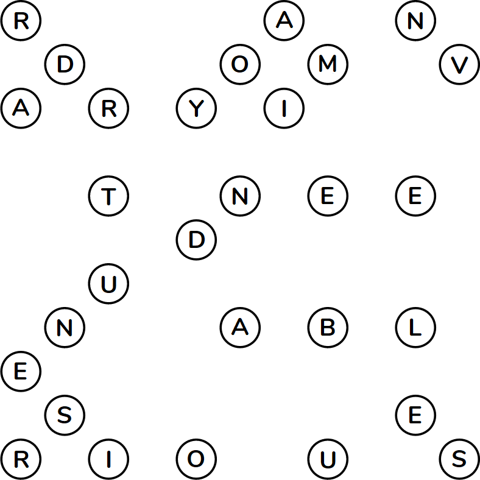

Contract Bridge
A: "Wait, I thought you said we were going to learn how to play bridge."
B: "We are! Wait, what other kind of bridge is there?"
Welcome to Bridge Simulator 2020! In this game, your task is to connect all the islands (circles) with bridges (lines). There are some rules that govern how you can assign bridges:
- The bridges must form a single connected component. (That is, it should be possible to get from any island to any other island by going across some sequence of bridges.)
- Each island must have a number of bridges connected to it equal to its number.
- Lines must be drawn up, down, left, and right only (no diagonal bridges are allowed).
- There can be up to two bridges connecting any given pair of islands.
- Bridges cannot cross each other.
You can find an interactive solver of this grid
here.
Click and drag to draw bridges, right-click to mark a border as empty.
"Oh, once you're done with that one, I found this map as well, which labels every island. I think we can improve our score by looking at the connections that'll see high foot traffic."
